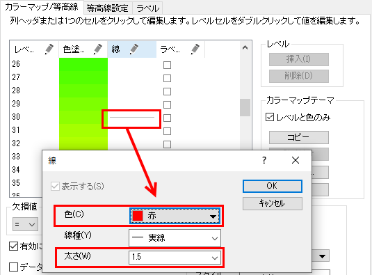

XYZ等高線
XYZ等高線
概要
このチュートリアルはXYZデータから等高線を作成し、XおよびYデータによる境界を設定する方法を示します。
必要なOriginのバージョン: Origin 2020以降
 | Origin 2018 SR0以前は、カスタム境界を適用すると境界マージンに不完全な色塗りが生成されることがありました。これはバージョン2018で改善されました。システム変数 @TCSMを使って、以前の不具合現象を修正することが可能です。

|
学習する項目
このチュートリアルでは、以下の項目について説明します。
- XYZデータから等高線図を作成する
- レベル、等高線、カラーマップを編集する
- カスタム境界を使用する
- カラースケールを編集する
- プロットの軸を編集する
ステップ
このチュートリアルは、グラフサンプルであるContour Plots - XYZ Contourに関連しています。
- メニューからヘルプ：ラーニングセンターを選択して、ラーニングセンターダイアログを開きます。ラーニングセンターダイアログの左側でグラフサンプルタブを選択し、キーワード「XYZ Contour」を入力してサンプルを検索します。サンプルリストは次のようになります。
- ワークブックをアクティブにして、列Dを選択し、メニューから作図 > 等高線図: カラーマップ等高線を選択して、作図します。
- プロット上でクリックしてミニツールバーを開き、レベルの設定ボタンをクリックして、レベルの設定ダイアログを開きます。ダイアログで、開始と 終了を0 と75 に設定し、主レベル数と副レベル数をそれぞれ15 と4 に設定します。OKボタンをクリックしてダイアログを閉じます。
- プロットを再度クリックして、ミニツールバーでパレットボタンをクリックし、リストからRainbowを選択します。
- X 軸上でクリックしてミニツールバーを開き、軸スケールボタンをクリックして、軸スケールダイアログを開きます。このダイアログで、開始と終了を-127、-65に設定します。OK ボタンをクリックします。
- Y 軸上でも同じように操作して、開始と終了を23、50に設定します。
- レイヤ内の白い領域でクリックしてミニツールバーを開き、軸の配置ボタンをクリックし、リストからなしを選んで全軸を非表示にします。
- 等高線図をダブルクリックして、作図の詳細ダイアログを開きます。等高線設定タブを開き、カスタム境界を選択して、境界XデータをCol(E):"Boundary X" にし、境界YデータをCol(F):"Boundary X" にします。そして、スムージング・パラメータを、0.0490234に設定します。
-
- カラーマップ/等高線タブを開きます。境界のグループにある等高線に従うのチェックを外します。これにより、境界線は異なるスタイルを使用できます。線ヘッダをクリックし、主レベル上のみ表示が選択してある事を確認します。全てに適用グループの下にある色 のチェックを付けてドロップダウンの中から明るい灰色を選び、等高線の色に設定します。OKをクリックして、ダイアログを閉じます。
- レベルが30の値のところにある線をクリックし、以下のように個別に設定を行い、OKをクリックしてダイアログを閉じます。
- 
- ここでは、レイヤサイズとアスペクト比を変更します。左側パネルでLayer1を選択して、右側パネルでレイヤの大きさタブを開き、レイヤ領域を以下のように設定します。
- OKをクリックして、作図の詳細ダイアログボックスを閉じます。グラフウィンドウをアクティブにして、グラフ操作: レイヤにページサイズを合わせるを選択してダイアログを開き、デフォルト設定のままOKボタンをクリックします。
- ここから色スケールの編集を行います。色スケールをダブルクリックし、色スケール制御ダイアログを開きます。以下の設定を行ってください。
- OK をクリックして設定を適用し、色スケール制御ダイアログを閉じます。
- 等高線図の上で右クリックし、テキストの追加を選択します。テキストボックスに「30-Year Mean Temperature for the Month of January」を入力します。フォーマットツールバーを使って、テキストラベルをダブルクリックし、フォント、フォントサイズなどを更新します。グラフは次のようになります。